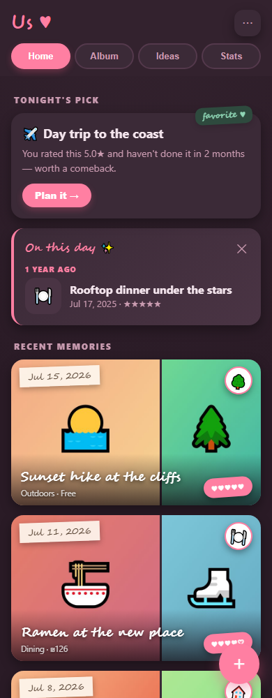
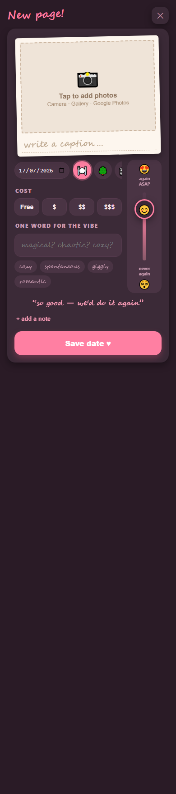
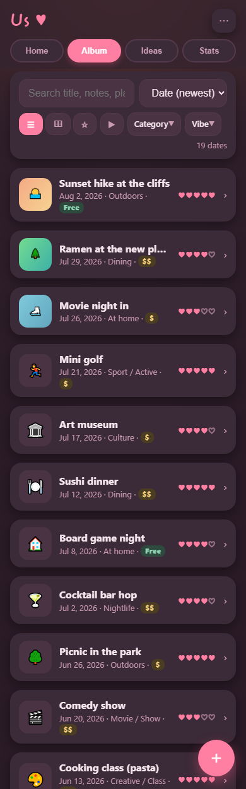
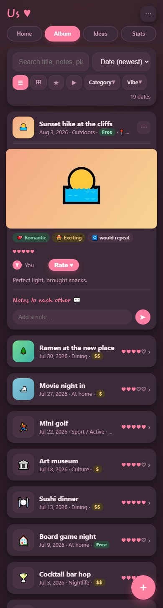
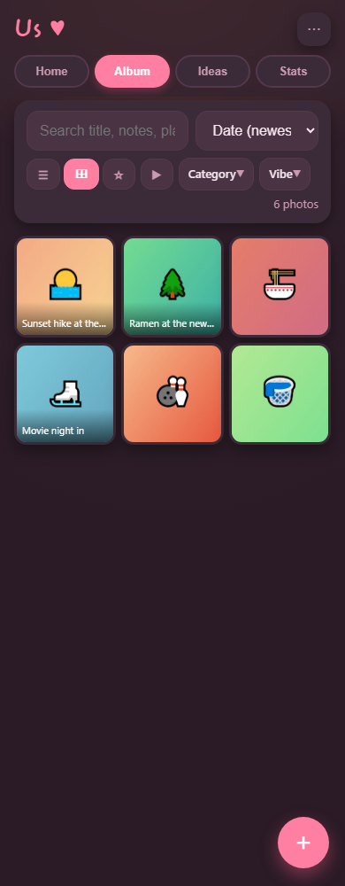
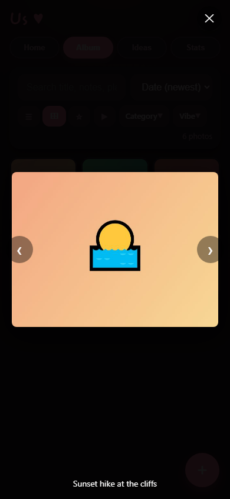
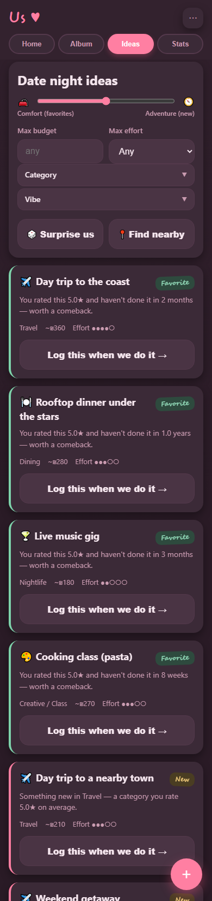
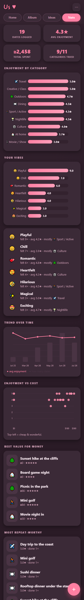
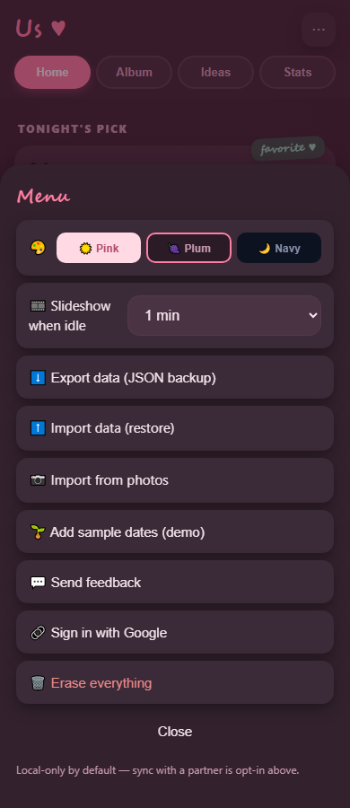
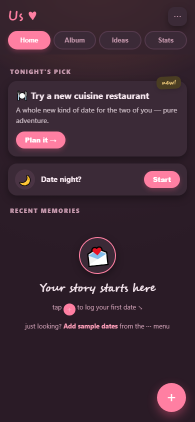

Every page and view of the app as it looks today (Sticker Book theme, Plum — the default).
Screenshots are captured from the real app with demo data via node design/capture.mjs
(needs the dev server running); re-run it after UI changes to refresh this catalog.









